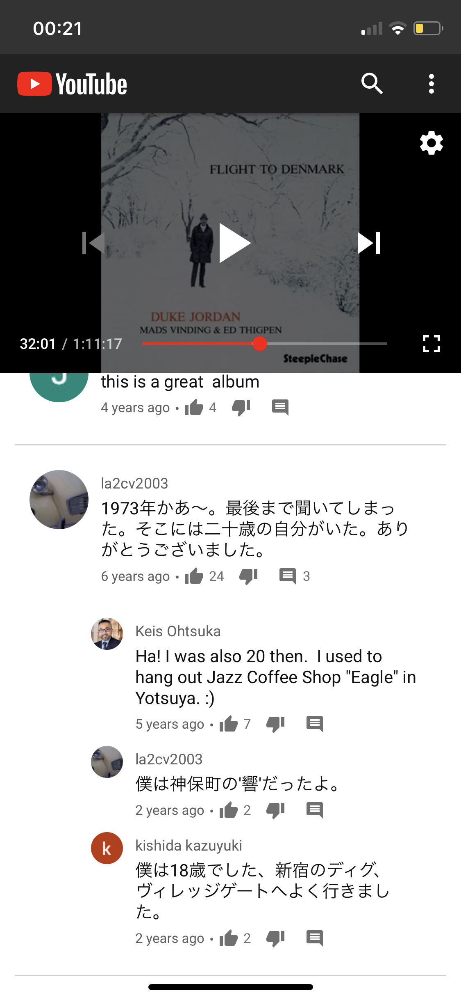

Night Lights
23rd August 2026
Sunday morning. Listening to Gerry Mulligan's Night Lights which YouTube somehow keep recommending. It's sublime, beauty. The audio system is just my Macbook, good music doesn't require fancy system. Another part is to read through the comments of Jazz YouTUbe. I'm quietly taking screen shots and collecting these beautiful words from people around the world. One of my favourites is comments from a video of "Flight to Denmark" by Duke Jordan. Assumingly two old Japanese guys enjoyed their 20s in 70s met here and talking about the good old days.

Rain started, gives a relaxing sound and the wind. Getting stronger and stronger within a minute, it goes away soon as well. The nature, Jazz records, books to read and have own project to focus on, a place to relax, no teams, outlook, slack. Cooking, fishing, hunting, farming, meeting people. I think these are my perfect state and these can't be achieved by maximising something but by rejecting and giving up. Rain stopped. Night Lights - Gerry Mulligan